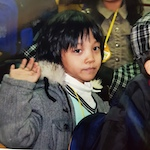

승연은 2022년 2학기, 홍익대학교 중앙 농구 동아리에 가입하여 알게 된 우진과 대화를 나누었다. 그리고 승연은 승연과 대화를 나누었다. 누군가와의 대화를 다시 읽어 보듯, 모바일 환경에서 천천히 엄지를 쓸며 읽기를 추천한다.
‘대화록’이라는 프로젝트 이름을 따라, 인터뷰보다는 대화처럼 해보자. 첫 번째 질문. 간단한 본인 소개와 근황을 들려 주세요. 요즘 어떻게 지내고 있나요?


나는 컴퓨터공학과 20학번 안우진이고, 사실 내 최근 생활을 딱 세 가지 단어로 다 얘기할 수 있어. 1 학교, 2 알바, 3 농구. 이렇게 세 개가 끝이야. 아, 하나 더 추가하자면 게임? 이렇게 4개. 이 4개가 지금 내 생활의 전부야.
그래? 그럼 그게 7번 질문이랑도 연결이 되겠네. 자연스럽게 이어서 7번을 해줄 수 있나요? 평소 일상을 어떻게 보내?
자세하게 얘기하자면, 학교를 월화수목금 다 나오고. 공강이 없고. 그리고 화요일, 목요일에는 학교 끝나고 알바하러 가고. 학원 알바. 아이들 가르치는. 수학, 과학. 그리고 수요일에는, 혹시 박스타 알아?
아니.
농구 선수라고 해야 되나? 3 대 3 국가대표였던, 되게 유명하신 분이 있는데, 그분한테서 수요일에 성인반 클래스로 농구 배우러 다니고. 그리고 토요일에는 매주 농구 동아리에서 농구하러 가고. 그러고 나머지 월요일... 그러니까 월요일, 금요일, 일요일 이렇게가 딱 내가 학교만 가고 할 게 없는 날. 그래서 이 날에 과제를 하든가, 게임을 하든가, 하는 거지. 사람도 가끔씩 만나고... 그런 거지.
되게 바빠 보인다. 안 힘들어?
별로? 힘들다고 해야 되나..? 힘든가..? 난 잘 모르겠어. 좀 빡세긴 하지. 해야 할 게 있을 때 스트레스를 많이 받긴 해.
그렇구나. 그러면 2번으로 넘어갈게요. 농구는 언제부터 시작했으며 시작의 계기는 무엇인지?
나는 원래 초등학교, 중학교 때는 애들이랑 운동장에서 놀면 무조건 축구였거든?
그래????
어. 무조건. 농구는 내 안중에 아예 없었어. 근데 고등학교 1학년에 들어가서 반에서 새로운 친구들을 사귀잖아. 그때 친해진 애들이 다 농구를 하는 거야. 그래서 나도 자연스럽게 고등학교 1학년 때부터 공을 만져보기 시작하고, 또 애들이랑 같이 몇 번 하면서 농구에 맛이 들렸지. 그래서 고등학교 때는 진짜, 점심시간은 물론, 매일 쉬는 시간마다 나가서 그 10분 짧게 하겠다고, 그거 10분이라도 하겠다고 쉬는 시간마다 나가서 체육관에서 농구하고 막 그랬어.
늦게 시작한 것 치고 진짜 좋아하네. 그러면 농구가 축구보다 더 좋아?
지금은 그렇지. 지금은 축구를 잘 못하니까.
아하. 그럼 동아리는 언제부터 활동했고, 가입한 이유는 뭐야?
농구 동아리는, 사실 고등학교 때는 학교에 체육관도 있고, 점심시간마다 애들이랑 같이 농구하고 그러니까 진짜 거의 맨날 농구를 할 수 있었잖아. 근데 성인이 되고 나서 사실상 농구를 하는 일이 많지 않은 거야. 왜냐하면 애들도 각자의 생활이 있고 그러니까 날짜 맞춰서 여러 명이 모여서 농구를 하기가 빡세고. 그런 것 때문에 농구를 한참 못 하다 보니까...
그러면 배우는 거라도 해서, 하면 어떨까, 해서 농구 배우러 다니게 된 거고. 이제 배우러 다니니까 살짝 욕심이 생기는 거야. 좀 더 잘하는 사람들이랑 하면 어떨까. 성인반은 사실 취미로 하는 거니까. 취미반보다 제대로. 잘하는 사람이랑 하고 싶어서 학교 동아리를 들어오게 된 거지. 그래서 지금 동아리 들어간 지 한... 세 달 됐나?
너도 동아리에 들어온 지 얼마 안 된 거였구나.
근데 두 달째까지는 너무 못해가지고 뛰어다니기밖에 한 게 없는 것 같아. 나한테 공도 잘 안 오고 그냥 수비만 열심히 하고. 그런 느낌? 근데 두 달 지나고 나니까 이제 살짝 어떻게 해야 되는지 알겠더라.
그렇고. 또 다른 동아리는 게임 동아리인데, Exp라고, 거기는 Play팀과 Make팀이 따로 있거든? Play는 말 그대로 게임을 하는 거지. 디스코드에 롤 방 있으면 거기서 같이 하고, 친목의 성향이 더 강해. 그런 쪽이고. 나는 Make에 있어. 게임을 만드는 부서인데, 내가 1학년 겨울방학에 여길 들어갔어.
왜 들어갔어?
왜냐하면... 내가 1학년 동안 컴공에 들어왔는데 아무것도 한 게 없는 거야. 수업에서도 뭔가 배운 게 없는 느낌인 거야. 그래서 그때 이대로 가다가는 취업도 못하겠다는 생각을 많이 했어. 이대로 학교 생활하다가는 망하겠구나, 내 밥 그릇도 못 챙겨 먹겠구나, 싶어서 고민을 했지. 그러면 내가 컴공인데, 코딩으로 그나마 내가 재미있게 할 수 있는 게 뭘까, 생각을 했는데. 내가 게임을 좋아하니까 게임을 만들어 보는 건 어떨까, 생각이 든 거야.
근데 마침 에브리타임에 찾아 봤는데 동아리 홍보 게시판에 딱 그 게임 만드는 동아리가 있는 거야. Exp였던 거지. 그래서 1학년 겨울방학 때 들어가서 활동을 하기 시작했지.
Exp에서 활동하는 건 어때?
맨 처음에는 우리 동아리 안에서 프로그래밍 스터디가 필요했고. 게임을 만드는 방법은 달라서 배워야 하니까. 코딩만 할 수 있다고 할 수 있는 게 아니라서 스터디를 하는데, 그 스터디를 되게 열심히 참여했고. 그리고 제대로 프로젝트를 처음 참여했는데, 나가리 됐어요.
나가리 됐다는 게...?
끝까지 출시를 못했어요. 여러 가지 부원들의 사유로... 우리가 프로젝트 하나를 할 때, 동아리 Make의 인원이 100명 정도 되거든?
우와. 진짜 많네.
플레이도 100명 정도? 근데 Make에서 보통 한 학기 프로젝트가 있고, 방학 프로젝트가 있어. 학기 프로젝트는 말 그대로 학기 중에 하는 거고, 방학 프로젝트는 방학 중에 해. 근데 학기 중에 하는 거는 방학 중에 하는 것보다 규모가 작을 수밖에 없지. 그래서 맨 처음에 내가... 아. 나 1학년 2학기에 들어갔나?
1학년 2학기에 들어갔네. 그때 학기 중 프로젝트를 했는데, 그게 터지고, 1학년 겨울방학 프로젝트가 첫 출시작이었지. 그래서 보통 팀빌딩을 할 때 한 팀에 10명 정도 되거든?
기획 2~3명, 프로그래밍 2~3명, 그래픽 2~3명, 사운드 1명. 이렇게 해서 보통 10명 정도가 구성이 돼. 그렇게 10명이서 만든 건데 내가 학기 중 프로젝트는 터져버려서 많이 배운 게 없었어.
아하...
근데 방학 프로젝트를 하면서 많이 배웠지. 그래서 방학 프로젝트를 출시하고, 그 다음부터는 내가 메인 프로그래머를 맡고 쭉 해왔지. 학기 중, 방학 중 프로젝트 계속하면서 지금 출시한 게임이 4개.
원래 한 프로젝트를 할 때 출시를 목표로 하는 거야?
그치. 그래야 확실한 결과물이 되는 거니까. 결과물이 없으면 그게 진실인지 거짓인지 알 수가 없잖아.
그러면 4번 질문에서 경험한 프로젝트 중에 좋아하는 걸 소개해달라고 하려 했는데, 그 좋아하는 프로젝트가 이거일까?
처음에 한 거? 아니지. 처음에 한 건 내가 메인 프로그래머가 아니고 서브 프로그래머로 한 거라서 나의 손길이 많이 안 묻어 있지. 그리고 처음이니까 거의 배우면서 한 거라서, 그것에 애정이 있다기보다는 나한테 고마운 프로젝트지. 그걸 하면서 많이 배웠으니까.
그거 말고 제일 최근에 출시한 게 하나 있는데, 그걸 거의 6개월 동안 만들었어.
되게 오래 했다.
6개월 동안 만들어서 출시했는데 퀄리티도 제일 좋았고. 나도 실력이 늘었으니까. 아무래도 제일 오래 만들었고, 제일 퀄리티가 좋고. 제일 최근 프로젝트가... 가장 좋아한다기보다, 가장 애정한다?
그 프로젝트에 대해서 자세히 얘기해줄 수 있어?
구글에 검색하면 나오는데 ‘심연 속으로’라는 게임이야. 장르는 방탈출. 맵 돌아다니면서 아이템 같은 거 모으고 퍼즐 풀고. 간단한 스토리는... 내 동생이 어느 날 없어졌는데 알고 보니까 사이비 종교에 빠진 거야. 사이비 종교 신자가 되어서. 그래서 나도 사이비 신자로 변장을 해서 거기에 몰래 들어가서 동생을 찾으러 가는, 그런 내용이야.
우와. 너도 기획에도 참여 해?
아니지. 난 기획에는 아니고. 난 오로지 프로그래밍 쪽만 하는 거지.
기획팀에서 내용을 짜 주면 그거에 맞춰서 만드는 거구나. 신기하다. 나는 시각디자인을 전공하고 있잖아. 여기선 나 혼자서 해결할 수 있는 규모의 프로젝트가 많은 것 같아서 신기해. 지금 이 인터뷰를 하는 것도 내가 어떤 주제로 인터뷰 할지도 정하고, 그걸 끝까지 나 혼자서 다 진행을 하는데 그러지 않는다고 하니까.
근데 이게 여럿이서 하는 것 나름의 고충이 있지. 팀플 해봤잖아.
그러니까. 기획이 마음에 안 들 수도 있잖아.
근데 그건 어쩔 수 없어. 이게 생각을 어떻게 해야 되냐면, 무조건 기획의 생각이 옳다고 생각해야 돼. 안 그러면 싸울 수밖에 없어. 그리고 ‘기획은 나보다 기획을 더 잘하지’라는 마인드가 깔려 있어야 해. 그래야 그 사람의 의견을 존중하고 따를 수 있고.
좋은 마인드다. 기획이 그렇게 한 데는 이유가 다 있겠지.
솔직히 말해서 마음에 안 드는 거 있거든? ‘이거 스토리 이렇게 짜면 좀 별로일 것 같은데, 게임 이런 식으로 굴러 가면 좀 별로일 것 같은데.’ 이런 게 있는데. 그래도 기획 말을 존중해 주는 게 팀이 돌아가는 데 훨씬 도움이 되지.
멋있네요.
어쩔 수 없어.
다음 질문은... 저번 훈련 때 성우 오빠와 지하철에서 졸업 프로젝트에 대한 이야기를 했었는데, ‘우진이처럼 잘하는’ 친구와 졸업 프로젝트를 해야 하는데 친구를 못 찾았다는 이야기를 들었어. 그래서 우진의 전공에 대한 이야기를 듣고 싶어.
나처럼, 잘? 근데 그 형 나랑 같이 프로젝트를 안 해봤는데. 내가... 나 그렇게 잘하나..? 잘 모르겠는데?
전공에 대한 이야기... 나는 사실 대학교 들어오기 전까지 코딩의 ‘코’자도 몰랐어. ‘코’도 아니고, ‘ㅋ’자도 몰랐어. ‘ㅋ’에 있는 그 한 획도 몰랐어. 여기서 딱히 애정이랄 건 없는 것 같아.
내 과에 대해서는 딱히... 나는 그냥 취업 잘 된다길래, ‘컴공 가자~’ 이러고 그냥 점수 맞춰서 들어온 거라서. 과에 대한 애정이 딱히...
그럼 컴공에 오고 나서도 애정이 딱히 안 생겼어?
응. 그냥... 살짝 그런 거지. 너 수능 공부할 때 수학에 대한 애정이 생겨?
수학에 대한 애정? 생겨야 한다면 생기겠지.
아, 진짜? 나는 수학 풀 때도, 이과인데. 그냥 문제를 해결했을 때 성취감은 있었는데, 그렇다고 수학을 애정하거나 그러진 않았어.
진짜 그냥 비즈니스적인 마인드?
그냥 그 과목에 대해서 딱히... 솔직히 수학 문제 푸는 것보다 게임하는 게 훨씬 재밌잖아.
그렇군요!
그러니까 나는 딱히, 그거에 대한 애정은 없었던 것 같아.
게임하는 걸 애정하시는군요~ 그러면 가고 싶었던 과가 따로 없었어?
과는 따로 없었고. 난 사실 초, 중, 고 통틀어서 일관된 꿈이 하나 있었어. 진짜 하고 싶었던 거는, 프로파일러.
프로파일러???
전혀 다르지.
전혀. 완전.
내 마음 속에 묻어두고 있는 나의 진정한 꿈은 프로파일러. 유치원 때부터 ‘그것이 알고 싶다’ 챙겨봤어.
근데 전공을 하지 않은 이유가 있나요?
그쪽으로 가지 않은 이유... 고등학교 때 원래 경찰대 시험 준비했었는데 떨어져서. 재수를 할 때도 준비를 할까, 말까 고민했는데 그냥 지금 하나에 올인하자, 그래서 경찰대는 포기하고 현실에 타협했던 것 같아.
아하. 처음 봤어, 경찰대 준비한 사람. 이 대화를 웹에 기록하는 데에 있어서 좋은 힌트가 된 것 같아. 웹의 구조와 디자인을 고민하고 있었는데. 사실 그래서 버섯을 골라 달라고 한 거야.
버섯? 무조건 양송이거든요. 삼겹살 구워 먹을 때 양송이에 생긴 그 국물. 너무 맛있어. 그 국물과 함께 소금 딱 해서 먹으면 그렇게 맛있을 수가 없어.
좋아하는 음식이라서~?
그지.
(우진은 [그치]를 [그지]로 발음한다. 승연은 이 발음이 마음에 들어 표기에 살려 두었다.)
맛있으니까.
내가 주변에 버섯을 골라 달라고 하면, 초코송이 같은 유사 버섯을 가져오는 친구들도 많거든?
마리오 버섯 이런 거? 난 무조건 양송이. 무조건 삼겹살 불판에 구워 먹는 양송이. 물이 담긴.
알겠어, 양송이로 해줄게요. 구체적인 상황 감사합니다. 그리고 이 대화록은, 너와도 대화를 나누고 나 스스로와도 대화를 나눠야 하거든. 나는 너에게 던진 질문을 똑같이 나 스스로에게도 던져 보려고 해. 서로의 대답이 어떻게 다른지도 비교해보고 싶어서. 그래서 여섯 번째 질문을 ‘저에게 가장 좋아하는 땡땡은 무엇인가요?’라고 질문을 한다면, 땡땡에 무엇을 채워 질문하고 싶은지 써뒀어. 나한테 가장 좋아하는 땡땡이 무엇이냐고 질문할 수 있다면 뭘 물어볼래?
흐음...
가장 좋아하는 볼펜 심 굵기는 뭔가요?
볼펜 심 굵기요? 그게 갑자기 왜 나온 거죠?
며칠 전에 그냥 얘기하던 주제 중 하나라서.
아하.
좀 뭉뚝한 게 좋아, 얇은 게 좋아?
나는...음...볼펜?
볼펜이든, 샤프든, 연필이든.
도구에 따라 달라져. 제트스트림 볼펜 같은 거면 0.7이 좋고, 샤프는 0.5 2B로 쓰는 걸 좋아해.
나는 무조건 굵은 거. 굵고 부드럽게 써지는 거.
전혀 예상치 못한 걸 물어보네.
너무 식상하면 재미 없잖아.
그럼 다음 질문으로. 남은 2022년 안에 꼭 하고 싶은 일이 있다면 무엇인지?
난 이거 고등학교 때부터 버킷 리스트로 써놨던 것들이 있거든. 몇 개는 벌써 이뤘어. 근데 아직 못 이룬 게, 번지 점프하기, 서핑 배우기, 패러글라이딩, 스케이트보드 배우기. 이렇게 4개를 올해가 끝나기 전에 할 수 있을지는 모르겠지만.
나머지 이룬 것들은 뭐였어?
농구 배우는 거. 고등학교 때 적어놨던 거니까, 알바도 너무 해보고 싶었어. 알바도 했고, 플레이스테이션 사기. 그리고 운전면허 따기. 그리고 또 있다. 배낭 여행! 나 혼자서 배낭 메고 부산 찍고 오는 거야. 걸어서.
그냥 길 가다가 민박집 보이면 거기서 하룻밤 묵고. 배낭만 메고 쭉 걸어서 부산 갔다 오고.
재미있겠다. 이번 방학에 한번...! 재미있는 목표가 많네. 그러면 2023년의 목표는 무엇인가요?
안타깝게도 23년에는 내가 군대에 있을 예정이라서. 군대 가서 몸 키워 오기. 할 수 있다면 농구도. 군대 가서 농구하는 게 쉽지가 않아서. 일단 확실한 건 운동 열심히 하기? 근육으로 5kg 찌워서 오기. 그겁니다. 군대 가니까 할 말이 없다.
나도 어떻게 할 말이 없다. 힘내라고밖에 못하겠다. 좋은 사람을 만나길 바라.
군대 가서? 좋은 사람 만나는 것보다 이상한 사람 안 만났으면 좋겠어.
그래. 그게 더 낫겠다. 그러면 마지막으로 좋아하는 색의 HEX CODE! 여기서 찍어줘. (어도비 일러스트레이터로 색을 골라 주었다.)
살짝 부드러운 느낌의 연분홍색.
감사합니다. 반영 해볼게요.
내가 연분홍색에 빠졌을 때 게임이 컨트롤러를 연분홍색으로 살까도 고민했었어.
그럼 연분홍색 옷도 있나요?
아니. 옷은 안 입어. 내 피부색이랑 너무 안 어울리기 때문에, 그러진 않고. 그냥 악세사리 같은 거? 핸드폰 연분홍색도 예쁜 것 같고. 옷으로 입기에는 좀...
그렇군. 도와주셔서 감사합니다. 마지막에 새해 소원을 꼭 이루라고 말해주려고 했는데, 어떻게 좀... 그렇네.
하필. 하아피일.
처음의 방으로 돌아가고 싶다면...